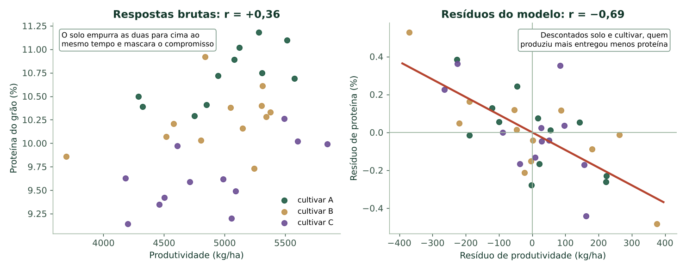
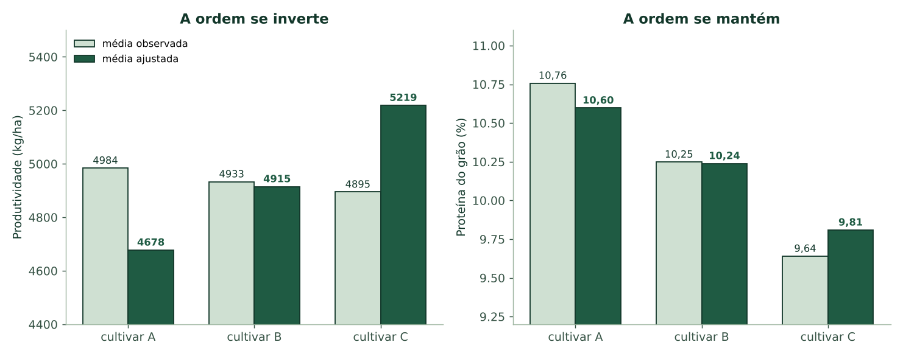

MANCOVA
Compara vetores de médias de vários grupos descontando o efeito de covariáveis contínuas medidas antes do tratamento.
Comece por aqui
A ANCOVA acrescenta uma covariável à ANOVA; a MANOVA acrescenta respostas. A MANCOVA faz as duas coisas: compara vetores de médias de vários grupos, descontando o efeito de uma ou mais covariáveis contínuas. É o modelo natural para experimentos em que se mede mais de um resultado e existe uma condição inicial a controlar.
Produtividade e proteína do grão têm correlação bruta de apenas +0,36 nestes dados. Depois de descontar o solo e a cultivar, a correlação entre os resíduos é −0,69: o compromisso clássico entre produzir mais e produzir grão mais rico. A covariável não só reduz o erro — ela revela a relação que estava escondida.
O que é a MANCOVA
O modelo é o mesmo da MANOVA, acrescido de um termo linear na covariável, com um coeficiente para cada resposta. O teste do fator compara o modelo completo com o modelo que só tem a covariável: a diferença entre as matrizes de resíduos é a matriz \(\mathbf H\) do efeito ajustado. Como na ANCOVA, as médias comparadas são as que os grupos teriam se todos partissem do mesmo valor da covariável.

Na ANCOVA, o ganho do ajuste se mede pela queda do quadrado médio do resíduo. Na MANCOVA, o análogo é o determinante da matriz de resíduos \(\mathbf E\), que mede o "volume" ocupado pelo erro no espaço das respostas. Neste exemplo ele cai de 2,04 × 10⁷ para 8,18 × 10⁵: uma redução de 96%.
Pressupostos e como verificá-los
| Pressuposto | Por que importa | Como verificar |
|---|---|---|
| Paralelismo multivariado: os planos de regressão são paralelos entre os grupos | Sem ele não existe um vetor único de diferenças ajustadas. | Teste multivariado do termo covariável:grupo. |
| Relação linear entre covariável e cada resposta | O ajuste é linear. | Diagramas de dispersão por grupo. |
| Covariável medida antes do tratamento | Ajustar por consequência do tratamento remove parte do efeito. | Protocolo; não é detectável nos dados. |
| Normalidade multivariada dos resíduos | Sustenta as distribuições aproximadas. | Shapiro por resposta e Mardia no conjunto dos resíduos. |
| Matrizes de covariância dos resíduos iguais entre os grupos | É o análogo multivariado da homocedasticidade. | Teste M de Box aplicado aos resíduos. |
| Observações independentes | Indispensável. | Delineamento. |
| n por grupo maior que o número de respostas | E, idealmente, bem maior. | Conte as observações. |
| Sobreposição das faixas da covariável | Fora dela, a comparação é extrapolação. | tapply(x, grupo, range). |
Hipóteses e estatística de teste
Como na ANCOVA, testa-se primeiro o pressuposto e só então a hipótese de interesse:
Em que:
- \(\mathbf y_{ij}\)
- vetor de p respostas da unidade j no grupo i
- \(x_{ij}\)
- valor da covariável
- \(\boldsymbol\tau_i\)
- vetor de efeitos ajustados do grupo i
- \(\boldsymbol\beta\)
- vetor de inclinações, comum a todos os grupos
- \(\mathbf E_{\text{reduzido}}\)
- resíduo do modelo sem o fator
- \(\mathbf E_{\text{completo}}\)
- resíduo do modelo com fator e covariável
Exemplo numérico, passo a passo
Trinta e seis parcelas, três cultivares, duas respostas (produtividade e proteína), uma covariável (matéria orgânica do solo). Logo p = 2, k = 3, N = 36 e os graus de liberdade do erro são 36 − 3 − 1 = 32.
O modelo com interação covariável × cultivar é comparado ao de planos paralelos. O traço de Pillai do termo de interação vale 0,02935, com F(4; 60) = 0,223 e p = 0,924.
As inclinações estimadas confirmam: para a produtividade, 614,8, 691,0 e 696,3 kg/ha por ponto percentual de matéria orgânica; para a proteína, 0,376, 0,328 e 0,351 ponto percentual. O modelo de planos paralelos está autorizado.
Os autovalores de \(\mathbf E^{-1}\mathbf H\) são \(\lambda_1=1{,}8351\) e \(\lambda_2=0{,}0012\), de modo que
O lambda de Wilks é \(\Lambda=0{,}35229\), com \(F(4;62)=10{,}615\) e \(p=1{,}3\times10^{-6}\).
A média ajustada da cultivar A para a produtividade é \[\begin{aligned}&4\,984{,}08 \\ &\quad -671{,}26\times(3{,}3683-2{,}9122) \\ &= 4\,677{,}92\end{aligned}\] kg/ha; para a proteína, \(10{,}758-0{,}353\times0{,}4561=10{,}597\%\).
Propriedades
- Com p = 1, reduz-se à ANCOVA; sem covariável, à MANOVA.
- Cada covariável consome um grau de liberdade do erro, por resposta.
- O ganho de precisão depende da correlação entre covariável e respostas, e pode diferir de resposta para resposta.
- Quando o fator tem 1 grau de liberdade (dois grupos), s = 1 e as quatro estatísticas coincidem — é o que ocorre, aqui, com o teste da própria covariável.
- As médias ajustadas podem ser avaliadas em qualquer valor da covariável.
- É um caso particular do modelo linear multivariado geral.
Como interpretar os resultados
- Teste o paralelismo multivariado. Se rejeitar, não há um vetor único de diferenças ajustadas a relatar.
- Confirme que a covariável é anterior ao tratamento.
- Leia o teste multivariado do fator, ajustado pela covariável, com o traço de Pillai.
- Acompanhe com as ANCOVAs univariadas, com ajuste pelo número de respostas.
- Reporte as médias ajustadas de cada resposta, ao lado das observadas.
- Compare o determinante de E com e sem a covariável: é a medida do ganho.
| Elemento | O que informa | Cuidado |
|---|---|---|
| Pillai do termo covariável:grupo | Paralelismo dos planos. | A primeira linha a olhar. |
| Pillai do fator, ajustado | Efeito do tratamento sobre o conjunto das respostas. | Use tipo II ou III. |
| Autovalores | Em quantas direções está a separação. | Um só autovalor grande indica efeito unidimensional. |
| Correlação dos resíduos | A relação entre as respostas, limpa de solo e tratamento. | Muitas vezes é o achado mais interessante. |
| Médias ajustadas | O resultado a reportar. | Diga em que valor da covariável foram avaliadas. |
| det(E) | Volume do erro multivariado. | Compare com e sem a covariável. |
Como executar no R e em Python
Onde executar o código em Python
Não é preciso instalar nada: o Google Colab é um computador na nuvem, gratuito, que executa Python pelo navegador e já traz as bibliotecas usadas aqui (numpy, scipy e matplotlib).
A MANCOVA é um modelo linear multivariado: lm(cbind(y1, y2) ~ covariavel + grupo), com stats. Os testes multivariados vêm de car::Anova(), com test.statistic entre "Pillai", "Wilks", "Hotelling-Lawley" e "Roy"; summary(Anova(...)) mostra as quatro de uma vez. O paralelismo se testa trocando + por * na fórmula. As médias ajustadas saem de emmeans, resposta por resposta. biotools::boxM() aplicado aos resíduos verifica a igualdade das covariâncias.
modelo <- lm(cbind(produtividade, proteina) ~ mo + cultivar, data = dados)
car::Anova(modelo, type = "II", test.statistic = "Pillai")
cor(residuals(modelo))
Exemplo de aplicação
Contexto dos dados
Os dados do exemplo são fictícios e foram criados pelo autor. São as mesmas 36 parcelas da ficha da ANCOVA — três cultivares de milho, doze parcelas cada, com o teor de matéria orgânica do solo medido antes da semeadura —, agora com duas respostas: a produtividade (kg/ha) e o teor de proteína do grão (%).
Código em R
# MANCOVA: exemplo completo ----
# Pacotes: stats (base), car (testes multivariados), emmeans (médias ajustadas), biotools
# install.packages(c("car", "emmeans", "biotools"))
# 1. Dados fictícios: as MESMAS 36 parcelas da ficha da ANCOVA, com uma segunda resposta.
mo <- c(3.82,2.17,3.92,3.88,2.48,3.17,4.13,3.79,3.75,3.39,3.23,2.69,
3.29,1.37,3.83,3.21,3.28,3.35,2.98,2.49,2.84,2.39,3.49,2.75,
2.49,3.90,1.74,2.29,1.76,3.19,1.38,2.34,2.43,3.44,1.70,2.49)
produtividade <- c(5309,4323,5577,5282,4288,4849,5513,5078,5120,4772,4946,4752,
5146,3691,5311,5377,5342,4838,5047,4578,5242,4517,5305,4803,
5092,5845,4461,4713,4182,5490,4199,4609,5057,5600,4502,4987)
proteina <- c(10.75,10.39,10.69,11.18,10.50,10.41,11.10,10.89,11.02,11.15,10.72,10.29,
10.16, 9.86,10.61,10.33,10.28,10.92,10.38,10.21, 9.73,10.07,10.40,10.03,
9.49, 9.99, 9.35, 9.59, 9.63,10.26, 9.14, 9.97, 9.20,10.02, 9.42, 9.62)
dados <- data.frame(cultivar = factor(rep(c("A", "B", "C"), each = 12)),
mo = mo, produtividade = produtividade, proteina = proteina)
aggregate(cbind(produtividade, proteina, mo) ~ cultivar, data = dados, FUN = mean)
cor(dados$produtividade, dados$proteina) # correlação BRUTA
# 2. Pressuposto central: paralelismo multivariado (homogeneidade das inclinações)
library(car)
m_int <- lm(cbind(produtividade, proteina) ~ mo * cultivar, data = dados)
Anova(m_int, test.statistic = "Pillai") # olhe a linha mo:cultivar
# 3. O modelo de MANCOVA: planos paralelos
modelo <- lm(cbind(produtividade, proteina) ~ mo + cultivar, data = dados)
Anova(modelo, type = "II", test.statistic = "Pillai")
Anova(modelo, type = "II", test.statistic = "Wilks")
summary(Anova(modelo, type = "II")) # as quatro estatísticas
# A correlação que interessa é a dos RESÍDUOS, não a bruta
cor(residuals(modelo))
# 4. Para comparar: a MANOVA sem a covariável
m_sem <- lm(cbind(produtividade, proteina) ~ cultivar, data = dados)
Anova(m_sem, test.statistic = "Pillai")
det(crossprod(residuals(modelo))) # volume do erro, com covariável
det(crossprod(residuals(m_sem))) # sem covariável
# 5. Médias ajustadas, resposta por resposta
library(emmeans)
for (r in c("produtividade", "proteina")) {
mj <- lm(as.formula(paste(r, "~ mo + cultivar")), data = dados)
print(r); print(emmeans(mj, ~cultivar)); print(pairs(emmeans(mj, ~cultivar), adjust = "tukey"))
}
# 6. ANCOVAs univariadas de acompanhamento, com ajuste
p <- sapply(c("produtividade", "proteina"), function(r)
Anova(lm(as.formula(paste(r, "~ mo + cultivar")), data = dados), type = "II")["cultivar", "Pr(>F)"])
p.adjust(p, method = "bonferroni")
# 7. Pressupostos restantes
library(biotools)
boxM(residuals(modelo), dados$cultivar)
apply(residuals(modelo), 2, shapiro.test)
par(mfrow = c(1, 2)); for (j in 1:2) qqnorm(residuals(modelo)[, j]); par(mfrow = c(1, 1))
# 8. Gráficos
par(mfrow = c(1, 2))
plot(dados$produtividade, dados$proteina, col = dados$cultivar, pch = 19,
xlab = "Produtividade (kg/ha)", ylab = "Proteína (%)", main = "Respostas brutas")
plot(residuals(modelo), col = dados$cultivar, pch = 19,
xlab = "Resíduo de produtividade", ylab = "Resíduo de proteína", main = "Resíduos do modelo")
abline(h = 0, v = 0, col = "gray60"); abline(lm(residuals(modelo)[,2] ~ residuals(modelo)[,1]), col = "red", lwd = 2)
par(mfrow = c(1, 1))
A mesma análise em Python, com os resultados
Cole o código em um notebook do Google Colab ↗ e execute com Shift+Enter. Os valores abaixo são a saída desse código.
# Bibliotecas: numpy, scipy e matplotlib (já instaladas no Google Colab)
import numpy as np
from scipy import stats
import itertools
# Dados fictícios: as MESMAS 36 parcelas da ficha da ANCOVA, com uma segunda resposta.
# Três cultivares de milho; em cada parcela mediu-se, antes da semeadura, o teor de
# matéria orgânica do solo (%), e na colheita a produtividade (kg/ha) e o teor de
# proteína do grão (%). Produtividade e proteína costumam andar em sentidos opostos.
mo = np.array([3.82,2.17,3.92,3.88,2.48,3.17,4.13,3.79,3.75,3.39,3.23,2.69,
3.29,1.37,3.83,3.21,3.28,3.35,2.98,2.49,2.84,2.39,3.49,2.75,
2.49,3.90,1.74,2.29,1.76,3.19,1.38,2.34,2.43,3.44,1.70,2.49])
prod = np.array([5309,4323,5577,5282,4288,4849,5513,5078,5120,4772,4946,4752,
5146,3691,5311,5377,5342,4838,5047,4578,5242,4517,5305,4803,
5092,5845,4461,4713,4182,5490,4199,4609,5057,5600,4502,4987], float)
prot = np.array([10.75,10.39,10.69,11.18,10.50,10.41,11.10,10.89,11.02,11.15,10.72,10.29,
10.16, 9.86,10.61,10.33,10.28,10.92,10.38,10.21, 9.73,10.07,10.40,10.03,
9.49, 9.99, 9.35, 9.59, 9.63,10.26, 9.14, 9.97, 9.20,10.02, 9.42, 9.62])
cult = np.repeat([0, 1, 2], 12)
rot = ["A", "B", "C"]
resp = ["produtividade (kg/ha)", "proteína (%)"]
Y = np.column_stack([prod, prot])
N, p = Y.shape
k = 3
def ols(X, Y):
"""Mínimos quadrados multivariado: devolve coeficientes e matriz E = resíduo'resíduo."""
B, *_ = np.linalg.lstsq(X, Y, rcond=None)
R = Y - X @ B
return B, R.T @ R, len(Y) - np.linalg.matrix_rank(X)
def testes(H, E, glh, gle, p):
"""Quatro estatísticas multivariadas, com as aproximações F usuais."""
autov = np.sort(np.linalg.eigvals(np.linalg.inv(E) @ H).real)[::-1]
s = min(glh, p)
pillai = float(np.sum(autov[:s] / (1 + autov[:s])))
wilks = float(np.prod(1 / (1 + autov[:s])))
hl = float(np.sum(autov[:s])); roy = float(autov[0])
m = (abs(glh - p) - 1) / 2; nn = (gle - p - 1) / 2
out = {}
d1 = s*(2*m + s + 1); d2 = s*(2*nn + s + 1)
F = (pillai / (s - pillai)) * (d2 / d1)
out["Pillai"] = (pillai, F, d1, d2, stats.f.sf(F, d1, d2))
r_ = gle - (p - glh + 1)/2; u = (p*glh - 2)/4; den = p**2 + glh**2 - 5
t = np.sqrt((p**2*glh**2 - 4)/den) if den > 0 else 1.0
d1 = p*glh; d2 = r_*t - 2*u
F = ((1 - wilks**(1/t)) / wilks**(1/t)) * (d2/d1)
out["Wilks"] = (wilks, F, d1, d2, stats.f.sf(F, d1, d2))
b = (gle + glh - p - 1)*(gle - 1)/((gle - p - 3)*(gle - p))
d1 = s*(2*m + s + 1); d2 = 4 + (d1 + 2)/(b - 1)
cte = d1*(d2 - 2)/(d2*(gle - p - 1)); F = hl/cte
out["Hotelling-Lawley"] = (hl, F, d1, d2, stats.f.sf(F, d1, d2))
rr = max(p, glh); d1 = rr; d2 = gle - rr + glh; F = roy*d2/d1
out["Roy"] = (roy, F, d1, d2, stats.f.sf(F, d1, d2))
return out, autov
def imprime(out):
print("estatística valor F aprox. gl1 gl2 p-valor")
for nome, (v, F, d1, d2, pv) in out.items():
print(f"{nome:<20}{v:8.5f} {F:11.4f} {d1:5.1f} {d2:6.2f} {pv:.4e}")
print("cultivar n produtividade média proteína média matéria orgânica média")
for i in range(k):
m = cult == i
print(f" {rot[i]} {m.sum():2d} {prod[m].mean():8.2f} {prot[m].mean():6.3f} {mo[m].mean():.4f}")
print(f" geral {N} {prod.mean():8.2f} {prot.mean():6.3f} {mo.mean():.4f}")
# 1. Como as duas respostas se relacionam
um = np.ones(N)
D = np.column_stack([(cult == 1).astype(float), (cult == 2).astype(float)])
X_comp = np.column_stack([um, mo, D])
B_comp, E_comp, gl_comp = ols(X_comp, Y)
R = Y - X_comp @ B_comp
print(f"\nCorrelação bruta entre produtividade e proteína: r = {np.corrcoef(prod, prot)[0,1]:+.4f}")
print(f"Correlação entre os RESÍDUOS do modelo: r = {np.corrcoef(R.T)[0,1]:+.4f}")
print("A correlação bruta é fraca porque o solo empurra as duas para cima ao mesmo tempo.")
print("Descontados solo e cultivar, o que sobra é o compromisso clássico: parcelas que")
print("produziram mais que o esperado entregaram grão com menos proteína.")
# 2. Pressuposto: paralelismo multivariado (homogeneidade das inclinações)
X_int = np.column_stack([um, mo, D, D * mo[:, None]])
B_int, E_int, gl_int = ols(X_int, Y)
H_par = E_comp - E_int
out, _ = testes(H_par, E_int, 2, gl_int, p)
print("\nParalelismo multivariado (interação cultivar x matéria orgânica)")
imprime(out)
print("As inclinações não diferem: o modelo de planos paralelos está autorizado.")
print("Inclinações por cultivar e resposta (por ponto percentual de MO):")
for j in range(p):
inc = [B_int[1, j], B_int[1, j] + B_int[4, j], B_int[1, j] + B_int[5, j]]
print(f" {resp[j]:<22}" + " ".join(f"{rot[i]}: {inc[i]:9.3f}" for i in range(k)))
# 3. MANCOVA: efeito do cultivar, ajustado pela covariável
X_cov = np.column_stack([um, mo]) # só a covariável
_, E_cov, _ = ols(X_cov, Y)
H_cult = E_cov - E_comp
print("\nMANCOVA: efeito do CULTIVAR, ajustado pela matéria orgânica")
out_c, autov_c = testes(H_cult, E_comp, k - 1, gl_comp, p)
imprime(out_c)
print(f"Autovalores de E⁻¹H: {np.round(autov_c[:2], 4)}")
X_sem = np.column_stack([um, D]) # só o fator
_, E_sem, _ = ols(X_sem, Y)
H_mo = E_sem - E_comp
print("\nEfeito multivariado da COVARIÁVEL, ajustado pelo cultivar")
out_m, _ = testes(H_mo, E_comp, 1, gl_comp, p)
imprime(out_m)
# 4. Para comparar: MANOVA sem a covariável
_, E_nul, _ = ols(um[:, None], Y)
print("\nMANOVA sem a covariável (o que se veria ignorando o solo)")
out_s, _ = testes(E_nul - E_sem, E_sem, k - 1, N - k, p)
imprime(out_s)
print(f"det(E) com covariável = {np.linalg.det(E_comp):.4e}")
print(f"det(E) sem covariável = {np.linalg.det(E_sem):.4e}")
print(f"A covariável reduz o volume do erro multivariado em "
f"{100*(1 - np.linalg.det(E_comp)/np.linalg.det(E_sem)):.2f}%.")
# 5. Médias ajustadas, resposta por resposta
mbar = mo.mean()
XtXi = np.linalg.inv(X_comp.T @ X_comp)
QM = np.diag(E_comp) / gl_comp
print(f"\nMédias ajustadas na matéria orgânica média ({mbar:.4f}%)")
print("cultivar produtividade obs. ajust. proteína obs. ajust.")
aj = np.zeros((k, p))
for i in range(k):
x0 = np.array([1.0, mbar, float(i == 1), float(i == 2)])
aj[i] = x0 @ B_comp
print(f" {rot[i]} {prod[cult==i].mean():8.2f} {aj[i,0]:8.2f} "
f"{prot[cult==i].mean():6.3f} {aj[i,1]:6.3f}")
# 6. ANCOVAs univariadas de acompanhamento, com ajuste de Bonferroni
print("\nANCOVAs univariadas (ajuste de Bonferroni para 2 respostas)")
print("resposta F(2; 32) p bruto p ajustado")
for j in range(p):
F = ((E_cov[j, j] - E_comp[j, j]) / (k - 1)) / (E_comp[j, j] / gl_comp)
pv = stats.f.sf(F, k - 1, gl_comp)
print(f"{resp[j]:<26}{F:9.4f} {pv:11.3e} {min(1, p*pv):11.3e}")
print("\nComparações entre médias ajustadas (Tukey, dentro de cada resposta)")
q95 = stats.studentized_range.ppf(0.95, k, gl_comp)
for j in range(p):
print(f" {resp[j]}")
for i1, i2 in itertools.combinations(range(k), 2):
c = np.array([0.0, 0.0, float(i2 == 1) - float(i1 == 1), float(i2 == 2) - float(i1 == 2)])
dif = float(c @ B_comp[:, j]); ep = float(np.sqrt(c @ XtXi @ c * QM[j]))
pa = stats.studentized_range.sf(abs(dif)/(ep/np.sqrt(2)), k, gl_comp)
marg = q95 * ep / np.sqrt(2)
print(f" {rot[i2]} - {rot[i1]}: {dif:+9.3f} | IC 95% = [{dif-marg:+9.3f}; {dif+marg:+9.3f}]"
f" | p ajustado = {pa:.5f}" + (" *" if pa < 0.05 else ""))
# 7. Pressupostos restantes
print("\nPressupostos")
ns = np.array([np.sum(cult == i) for i in range(k)], float)
Ss = [np.cov(R[cult == i], rowvar=False) for i in range(k)]
Sp = sum((ns[j] - 1) * Ss[j] for j in range(k)) / (N - k)
M = (N - k) * np.log(np.linalg.det(Sp)) - sum((ns[j] - 1) * np.log(np.linalg.det(Ss[j])) for j in range(k))
cc = (sum(1/(ns - 1)) - 1/(N - k)) * (2*p**2 + 3*p - 1) / (6*(p + 1)*(k - 1))
glM = (k - 1) * p * (p + 1) / 2
print(f" Teste M de Box nos resíduos: qui-quadrado = {M*(1-cc):.4f}, gl = {int(glM)}, "
f"p-valor = {stats.chi2.sf(M*(1-cc), glM):.4f}")
for j in range(p):
print(f" Shapiro-Wilk dos resíduos de {resp[j]:<22} p-valor = {stats.shapiro(R[:, j])[1]:.4f}")
print(f" Levene dos resíduos de {resp[j]:<22} p-valor = "
f"{stats.levene(*[R[cult==i, j] for i in range(k)], center='median')[1]:.4f}")
d2 = np.sum((R @ np.linalg.inv(np.cov(R, rowvar=False))) * R, axis=1)
b2 = np.mean(d2**2)
Bk = (b2 - p*(p + 2)) / np.sqrt(8*p*(p + 2)/N)
print(f" Curtose multivariada de Mardia nos resíduos: z = {Bk:+.4f}, "
f"p-valor = {2*stats.norm.sf(abs(Bk)):.4f}")
Resultados da execução
cultivar n produtividade média proteína média matéria orgânica média
A 12 4984.08 10.758 3.3683
B 12 4933.08 10.248 2.9392
C 12 4894.75 9.640 2.4292
geral 36 4937.31 10.215 2.9122
Correlação bruta entre produtividade e proteína: r = +0.3599
Correlação entre os RESÍDUOS do modelo: r = -0.6857
A correlação bruta é fraca porque o solo empurra as duas para cima ao mesmo tempo.
Descontados solo e cultivar, o que sobra é o compromisso clássico: parcelas que
produziram mais que o esperado entregaram grão com menos proteína.
Paralelismo multivariado (interação cultivar x matéria orgânica)
estatística valor F aprox. gl1 gl2 p-valor
Pillai 0.02935 0.2234 4.0 60.00 9.2432e-01
Wilks 0.97069 0.2173 4.0 58.00 9.2778e-01
Hotelling-Lawley 0.03015 0.2163 4.0 33.79 9.2751e-01
Roy 0.02870 0.4305 2.0 30.00 6.5417e-01
As inclinações não diferem: o modelo de planos paralelos está autorizado.
Inclinações por cultivar e resposta (por ponto percentual de MO):
produtividade (kg/ha) A: 614.776 B: 690.963 C: 696.293
proteína (%) A: 0.376 B: 0.328 C: 0.351
MANCOVA: efeito do CULTIVAR, ajustado pela matéria orgânica
estatística valor F aprox. gl1 gl2 p-valor
Pillai 0.64851 7.6776 4.0 64.00 4.0647e-05
Wilks 0.35229 10.6146 4.0 62.00 1.2896e-06
Hotelling-Lawley 1.83633 14.0923 4.0 36.19 5.0176e-07
Roy 1.83510 29.3616 2.0 32.00 5.7400e-08
Autovalores de E⁻¹H: [1.8351e+00 1.2000e-03]
Efeito multivariado da COVARIÁVEL, ajustado pelo cultivar
estatística valor F aprox. gl1 gl2 p-valor
Pillai 0.95990 371.0580 2.0 31.00 2.2300e-22
Wilks 0.04010 371.0580 2.0 31.00 2.2300e-22
Hotelling-Lawley 23.93923 371.0580 2.0 31.00 2.2300e-22
Roy 23.93923 371.0580 2.0 31.00 2.2300e-22
MANOVA sem a covariável (o que se veria ignorando o solo)
estatística valor F aprox. gl1 gl2 p-valor
Pillai 0.73214 9.5280 4.0 66.00 3.8373e-06
Wilks 0.26795 14.9097 4.0 64.00 1.1603e-08
Hotelling-Lawley 2.73176 21.6463 4.0 37.38 2.6074e-09
Roy 2.73165 45.0722 2.0 33.00 3.6613e-10
det(E) com covariável = 8.1829e+05
det(E) sem covariável = 2.0408e+07
A covariável reduz o volume do erro multivariado em 95.99%.
Médias ajustadas na matéria orgânica média (2.9122%)
cultivar produtividade obs. ajust. proteína obs. ajust.
A 4984.08 4677.92 10.758 10.597
B 4933.08 4915.00 10.248 10.239
C 4894.75 5219.00 9.640 9.810
ANCOVAs univariadas (ajuste de Bonferroni para 2 respostas)
resposta F(2; 32) p bruto p ajustado
produtividade (kg/ha) 22.9466 6.583e-07 1.317e-06
proteína (%) 26.3036 1.753e-07 3.507e-07
Comparações entre médias ajustadas (Tukey, dentro de cada resposta)
produtividade (kg/ha)
B - A: +237.082 | IC 95% = [ +61.420; +412.743] | p ajustado = 0.00627 *
C - A: +541.090 | IC 95% = [ +344.361; +737.819] | p ajustado = 0.00000 *
C - B: +304.008 | IC 95% = [ +125.934; +482.082] | p ajustado = 0.00058 *
proteína (%)
B - A: -0.358 | IC 95% = [ -0.597; -0.120] | p ajustado = 0.00231 *
C - A: -0.788 | IC 95% = [ -1.055; -0.520] | p ajustado = 0.00000 *
C - B: -0.429 | IC 95% = [ -0.671; -0.187] | p ajustado = 0.00036 *
Pressupostos
Teste M de Box nos resíduos: qui-quadrado = 2.7512, gl = 6, p-valor = 0.8394
Shapiro-Wilk dos resíduos de produtividade (kg/ha) p-valor = 0.9537
Levene dos resíduos de produtividade (kg/ha) p-valor = 0.4688
Shapiro-Wilk dos resíduos de proteína (%) p-valor = 0.8106
Levene dos resíduos de proteína (%) p-valor = 0.9847
Curtose multivariada de Mardia nos resíduos: z = -0.5239, p-valor = 0.6003
| Cultivar | n | Produtividade | Proteína | Matéria orgânica |
|---|---|---|---|---|
| A | 12 | 4 984,08 | 10,758% | 3,3683% |
| B | 12 | 4 933,08 | 10,248% | 2,9392% |
| C | 12 | 4 894,75 | 9,640% | 2,4292% |
| Elemento | Valor | Leitura |
|---|---|---|
| Correlação bruta entre as respostas | r = +0,360 | Fraca e de sinal enganoso. |
| Correlação entre os resíduos | r = −0,686 | O compromisso produtividade-proteína. |
| Paralelismo (Pillai) | 0,02935; F(4; 60) = 0,223; p = 0,9243 | Planos paralelos: MANCOVA autorizada. |
| Cultivar ajustado (Pillai) | 0,64851; F(4; 64) = 7,678; p = 4,1 × 10⁻⁵ | Diferença clara. |
| Cultivar ajustado (Wilks) | 0,35229; F(4; 62) = 10,615; p = 1,3 × 10⁻⁶ | Idem. |
| Covariável (Pillai) | 0,95990; F(2; 31) = 371,058; p = 2,2 × 10⁻²² | Efeito forte do solo. |
| MANOVA sem covariável (Pillai) | 0,73214; F(4; 66) = 9,528; p = 3,8 × 10⁻⁶ | Também rejeita — mas descreve mal. |
| det(E) com / sem covariável | 8,18 × 10⁵ / 2,04 × 10⁷ | Redução de 95,99% no volume do erro. |
| ANCOVA da produtividade | F(2; 32) = 22,947; p ajustado = 1,3 × 10⁻⁶ | Significativa. |
| ANCOVA da proteína | F(2; 32) = 26,304; p ajustado = 3,5 × 10⁻⁷ | Significativa. |
| Teste M de Box nos resíduos | χ² = 2,751; gl = 6; p = 0,8394 | Covariâncias compatíveis. |
| Shapiro dos resíduos | p = 0,954 e p = 0,811 | Normalidade atendida. |
| Curtose de Mardia nos resíduos | z = −0,524; p = 0,600 | Normalidade multivariada aceitável. |
| Comparação | Produtividade (kg/ha) | Proteína (%) |
|---|---|---|
| Médias ajustadas A / B / C | 4 677,9 / 4 915,0 / 5 219,0 | 10,597 / 10,239 / 9,810 |
| B − A | +237,1 [+61,4; +412,7]; p = 0,0063 | −0,358 [−0,597; −0,120]; p = 0,0023 |
| C − A | +541,1 [+344,4; +737,8]; p < 0,00001 | −0,788 [−1,055; −0,520]; p < 0,00001 |
| C − B | +304,0 [+125,9; +482,1]; p = 0,0006 | −0,429 [−0,671; −0,187]; p = 0,0004 |
Leitura: as três cultivares diferem no conjunto das duas respostas, e a direção da diferença é oposta nas duas. A cultivar C produz 541 kg/ha a mais que a A, mas entrega grão com 0,79 ponto percentual menos de proteína; a B fica no meio em ambas. Não existe, portanto, uma cultivar melhor em termos absolutos: existe uma escolha entre volume e qualidade, que depende do destino da produção — ração, moagem ou semente.
Dois pontos de método merecem registro. O primeiro é que a MANOVA sem a covariável também rejeita (p = 3,8 × 10⁻⁶), de modo que o ganho aqui não é detectar o que antes passava despercebido, como na ficha da ANCOVA. O ganho é de precisão e de descrição correta: o volume do erro cai 96%, e a ordem das cultivares em produtividade se inverte depois do ajuste. Um relatório baseado nas médias brutas elegeria a cultivar A como a mais produtiva, que é o oposto da verdade.
O segundo é a correlação dos resíduos. A correlação bruta entre produtividade e proteína é +0,36, o que sugeriria que as duas caminham juntas; a dos resíduos é −0,69. A diferença se explica porque o solo rico empurra as duas para cima ao mesmo tempo, criando uma associação positiva espúria que esconde o compromisso real. É a mesma lógica do paradoxo de Simpson, numa versão contínua: a relação dentro dos estratos tem sinal contrário à relação global.
Erros comuns
| Erro | Como evitar |
|---|---|
| Não testar o paralelismo multivariado | É o pressuposto central, e o mais esquecido. |
| Ajustar por variável medida depois do tratamento | Pode remover parte do próprio efeito. |
Usar anova() em vez de car::Anova(type = "II") | As somas sequenciais dependem da ordem dos termos. |
| Interpretar a correlação bruta entre as respostas | A que importa para o modelo é a dos resíduos. |
| Rodar ANCOVAs separadas sem ajuste depois da MANCOVA | A proteção da MANCOVA é só para a hipótese conjunta. |
| Empilhar covariáveis sem critério | Cada uma consome graus de liberdade; inclua as que têm justificativa. |
| Esperar que o ajuste beneficie todas as respostas igualmente | O ganho depende da correlação de cada resposta com a covariável. |
| Extrapolar fora da faixa comum da covariável | Comparar em valores que um grupo nunca atingiu é extrapolação. |
Alternativas e fluxo de trabalho
| Procedimento | Quando preferir |
|---|---|
| ANCOVAs separadas com ajuste | As respostas são conceitualmente independentes. |
| MANOVA | Não há covariável relevante. |
| Modelo linear multivariado geral | Vários fatores e covariáveis, delineamento complexo. |
| Modelo com interação (moderação multivariada) | O paralelismo falha. |
| ANOVA mista ou modelo misto | As respostas são a mesma variável ao longo do tempo. |
| Equações estruturais | Interesse em relações causais entre as respostas. |
| Análise discriminante com covariáveis | Interesse em classificar, não só testar. |
| PERMANOVA | Normalidade multivariada insustentável; dados de composição ou ecológicos. |
- Verifique que faz sentido tratar as respostas como um conjunto.
- Confirme que a covariável é anterior ao tratamento e relevante.
- Examine as dispersões por grupo, resposta a resposta, contra a covariável.
- Teste o paralelismo multivariado.
- Ajuste o modelo e leia o teste do fator com o traço de Pillai.
- Examine a correlação dos resíduos.
- Reporte as médias ajustadas de cada resposta, com comparações ajustadas.
Referências desta ficha
- JOHNSON, Richard A.; WICHERN, Dean W. Applied multivariate statistical analysis. 6. ed. Upper Saddle River: Pearson, 2007.
- RENCHER, Alvin C.; CHRISTENSEN, William F. Methods of multivariate analysis. 3. ed. Hoboken: Wiley, 2012.
- HAIR JR., Joseph F. et al. Multivariate data analysis. 8. ed. Andover: Cengage, 2019.
- OLSON, Chester L. On choosing a test statistic in multivariate analysis of variance. Psychological Bulletin, v. 83, n. 4, p. 579-586, 1976.
- COCHRAN, William G. Analysis of covariance: its nature and uses. Biometrics, v. 13, n. 3, p. 261-281, 1957.
- HUITEMA, Bradley E. The analysis of covariance and alternatives. 2. ed. Hoboken: Wiley, 2011.
- MILLER, Gregory A.; CHAPMAN, Jean P. Misunderstanding analysis of covariance. Journal of Abnormal Psychology, v. 110, n. 1, p. 40-48, 2001.
- SIMPSON, Edward H. The interpretation of interaction in contingency tables. Journal of the Royal Statistical Society, Series B, v. 13, n. 2, p. 238-241, 1951.
- R CORE TEAM. R: a language and environment for statistical computing. Vienna: R Foundation for Statistical Computing, 2026. Disponível em: https://www.r-project.org/. (Função
lmcom resposta matricial, pacotestats.) - FOX, John; WEISBERG, Sanford. An R companion to applied regression. 3. ed. Thousand Oaks: Sage, 2019. (Pacote
car, funçãoAnovapara modelos multivariados.) - LENTH, Russell V. emmeans: estimated marginal means, aka least-squares means. R package. Disponível em: https://CRAN.R-project.org/package=emmeans.
- DA SILVA, Anderson Rodrigo. biotools: tools for biometry and applied statistics in agricultural science. R package. Disponível em: https://CRAN.R-project.org/package=biotools.
- POSIT TEAM. RStudio: integrated development environment for R. Boston: Posit Software, PBC. Disponível em: https://posit.co/download/rstudio-desktop/.
- VIRTANEN, Pauli et al. SciPy 1.0: fundamental algorithms for scientific computing in Python. Nature Methods, v. 17, p. 261-272, 2020. DOI: 10.1038/s41592-019-0686-2. (Funções do módulo
scipy.stats.) - HARRIS, Charles R. et al. Array programming with NumPy. Nature, v. 585, p. 357-362, 2020. DOI: 10.1038/s41586-020-2649-2.
- HUNTER, John D. Matplotlib: a 2D graphics environment. Computing in Science & Engineering, v. 9, n. 3, p. 90-95, 2007.
- GOOGLE. Google Colaboratory. Disponível em: https://colab.research.google.com/.
- As figuras desta ficha foram elaboradas pelo autor.

Prof. Dr. Cássius Henrique Xavier Oliveira
Professor · ICTIN/UFLA · Estatística, Confiabilidade e Ciência de Dados.
Conheça minha trajetória e projetos →